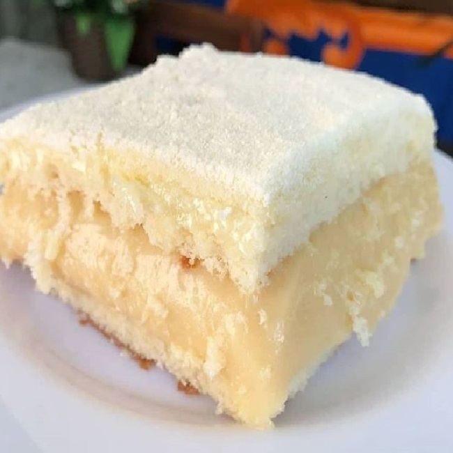

Bolo gelado

Um suculento e delicioso bolo de leite ninho e coco
leva 40 minutos para o preparo e serve 12 porções
Ingredientes
- Massa:
- 4 ovos
- 2 xícaras (chá) de açúcar
- 3 xícaras (chá) de farinha de trigo
- 1 copo (americano) de suco de laranja
- 1 colher (sopa) de fermento em pó
- Cobertura:
- 1 garrafa pequena de leite de coco
- 1 garrafa de leite (utilize a mesma garrafa do leite de coco como medida)
- 1 lata de leite condensado
- 1 pacote de coco ralado sem açúcar
modo de preparo
- Massa
- Em uma batedeira, bata as claras em neve acrescentando o açúcar aos poucos e bata por 3 minutos.
- Adicione as gemas, o trigo, o suco e continue batendo até formar uma massa homogênea.
- Por último, adicione o fermento e bata por mais 40 segundos na menor velocidade da batedeira.
- Despeje a massa em uma forma média e untada.
- Asse em forno preaquecido em temperatura média de 180 °C por 40 minutos ou até dourar.
- Cobertura:
- Em uma tigela, misture o leite de coco, o leite, o leite condensado e reserve.
- Após 40 minutos, retire o bolo do forno e fure toda a sua superfície com um garfo para facilitar a penetração da cobertura.
- Com o bolo ainda quente, despeje a cobertura sobre ele e salpique por cima o coco ralado.
- Leve a geladeira por 3 horas, depois corte o bolo em quadrados do tamanho que preferir e embrulhe com papel alumínio.
- Conserve na geladeira.